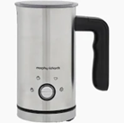

Thanks to the genero us support of our sponsor, our school was able to purchase a brand-new coffee machine — giving our Transition Year students the exciting opportunity to learn real barista skills! From brewing the perfect espresso to mastering latte art, this hands-on experience lets students explore the world of coffee making while gaining valuable life and workplace skills.


| Day | Time |
|---|---|
| Monday | 8.30 - 8.50 |
| Friday | 8.30 - 8.50 |